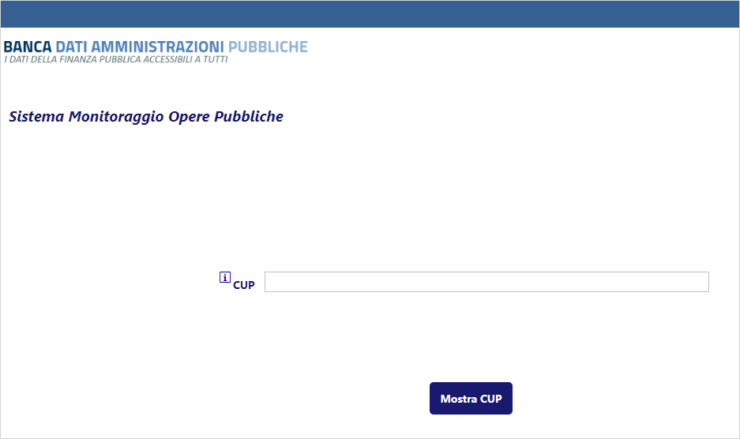
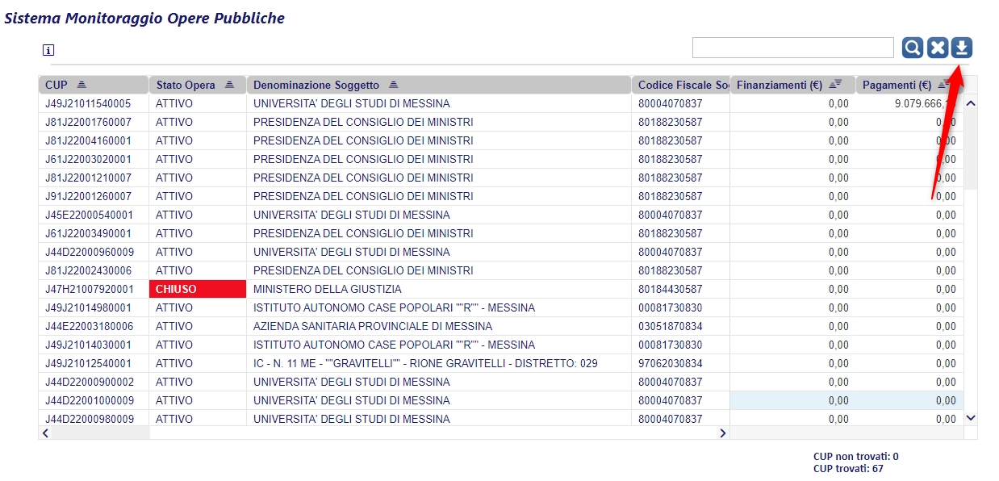

OpenBDAP
Il portale della Ragioneria Generale dello Stato
OpenBDAP è il portale della Ragioneria Generale dello Stato che consente di scoprire le tematiche della Finanza Pubblica, di esplorare i dati presenti all’interno della Banca Dati delle Amministrazioni Pubbliche e di analizzare i risultati frutto di elaborazioni personalizzate.
I dati correlati al PNRR
OpenBDAP pubblica delle estrazioni dalla banca dati BDAP/MOP, in cui sono inseriti anche i dati del monitoraggio degli interventi finanziati solo con risorse nazionali del PNC - Piano nazionale per gli investimenti complementari al Piano nazionale di ripresa e resilienza (PNC). Il sistema Regis e BDAP si alimentano a vicenda.
Non ci sembra che attualmente in questo portale ci siano dei dati “etichettati” come PNRR o PNC e/o che ci siano delle modalità automatiche pubbliche aperte (API) per estrarre dati a partire da un codice CUP o da un CIG.
Nella sezione “Come pubblicare sui siti Istituzionali delle Amministrazioni Pubbliche i collegamenti ipertestuali ai dati contenuti nella BDAP”, viene indicato l’URL per esplorare le opere pubbliche di una Pubblica Amministrazione, a partire dal suo Codice Fiscale.
Questo ad esempio quello dell’ANAS (80208450587 è il suo codice fiscale):
https://openbdap.rgs.mef.gov.it/BO/OpenDocument?modalita=link&docID=FgAUHFlfxgsAFwYAAACHAiUbeOO1D67w&T=BusinessObject &idType=CUID&noDetailsPanel=true&X_Ente=80208450587
➡️ NOTA BENE: in questa pagina in alto a destra è presente il link alla “RICERCA PER CUP”. In questo percorso alla ricerca dei dati relativi al PNRR ci sarà utile.
Al click su “RICERCA PER CUP” si apre il form dedicato (vedi Figura 2).

In questo form è possibile inserire uno o più codici CUP separati da ; (non più di 300), e poi fare click sul tasto “Mostra CUP”.
In output una tabella con i risultati della ricerca, di cui è possibile fare il download in formato Excel.

Il foglio elettronico di output è suddiviso in tre fogli:
Dettaglio CUP;Dettaglio CIG;Dettaglio Indicatori.
Quindi per estrarre da OpenBDAP dei dati relativi al PNRR, si può ancora una volta usare l’elenco dei CUP del Focus PNRR di OpenCUP, come elemento di filtro.
Purtroppo non più di 300 CUP per volta.
Qui un esempio di output.